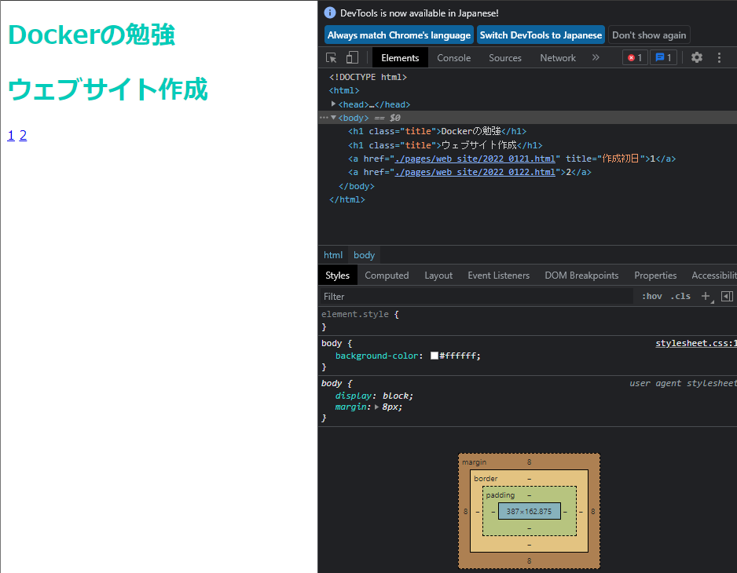

progateのレッスンを開始
2022年1月25日
WEBサイト解析ツール
今日は，ちょっと衝撃を受けたことを先に報告します．一般に普及しているブラウザにはそれぞれWEBサイトを構成するHTMLやCSSファイルを解析する方法が用意されています．例えば，Chromeでは，「...」 -> 「その他のツール」 -> 「デベロッパーツール」の手順で移動することで写真のようにHTMLのコードを表示することができます．

デザイン性に優れたWEBサイトの検索
この方法を使うことで，他者が作ったサイトの裏側もばっちり見ることができます．そこで，自分が欲しい機能のプログラムをコピーして書き換えれば，自分のサイトも簡単にデザインの良いものにできる～って考えたわけです．そんなわけで，デザイン性の良いサイトを探すことにしました．その時見つけたのが次のサイトです．
【Webデザインまとめサイト7選】見やすい最新デザイン参考サイト！
このサイトでは，見やすいサイトを集めたサイトを7つ程紹介してくれています．これで，HTMLをを持ってくるためのベースとなるWEBサイトも探すことができるようになりました．
結果...
試してみた結果，他者が作ったWEBサイトに含まれるHTMLを持ってくることは，一旦断念しました．というのも，きれいなWEBサイトの背後で動くコードの量が桁違いに多く，自分の付け焼刃の知識ではとても理解できなかったためです．そこで，一度しっかりとHTML，CSSについて理解を深めようと思い，progateのオンライン講座を受講しようと思いました．この講座は4つの学習ステップと3つの演習からなる計7つの単元で構成されています．また，学習目安も表示されており，HTML & CSSの場合は，3時間50分とおおよそ4時間程度かかるみたいなので，1日1単元ずつ計4日かけて学習に取り組みたいと思います．
今日の学習のまとめ
HTML編
- テキストをタグで囲むときは，開始タグと終了タグで挟む
- 終了タグには「/」が必要
- 見出し要素は＜h1＞以外にも，＜h2＞，...＜h6＞がある
- 見出し要素の「h」は「heading（見出し）」の略
- ＜p＞は段落を表す(「p」は「paragraph（段落）」の略)．
- ＜!-- --＞で文字を囲むとコメントアウト
- テキストを＜a＞で囲むとリンクを作成できる
- リンクの飛び先を指定するには，＜a href="飛び先のURL"＞と書く
- hrefは属性と呼ばれ，開始タグ中に記述する必要がある
- 画像の表示には＜img＞要素を用いる．
- ＜img src="URL"＞とし，URLの部分に画像のリンクを指定することで画像が表示される
- ＜img＞には終了タグがない
- リストを作るには，箇条書きしたいテキストを＜li＞タグで囲む
- ＜li＞を＜ul＞で囲むと，先頭に黒点がつく
- ＜li＞を＜ol＞で囲むと，数字が連番でつく
- 要素を要素で囲むことを**入れ子**と言い，囲む方の要素を**親要素**，囲まれている要素を**子要素**と呼ぶ．
- 入れ子構造がある場合，子要素は**インデント**（字下げ）する
CSS編
- HTMLの要素に対して色，大きさ，配置などを指定し，ページをデザインするための言語
- CSSは，HTMLとは別のファイルに記述する
- HTMLの要素に対して，CSSを用いて「どこの」「何を」「どうするか」を指定することができる
- 対象の要素名を**セレクタ**，変更項目を**プロパティ**という
- 文字の色を変えるには，「color」プロパティに対して16進数のカラーコードで指定
- CSSを書く時も字下げ
- CSSの場合，プロパティの末尾にはコロン(:)，行末にはセミコロン(;)をつける
- コメントアウトは'/**/'
- 文字の大きさは`font-size`プロパティで指定(単位は px)
- 文字の種類は`font-family: フォント名;`で指定する
- フォント名にスペースがある場合は，ダブルクォーテーションで囲む
- 背景色を変えるには`background-color`プロパティを用いる
- 要素の横幅，高さを変更したい時には，それぞれ`width`プロパティ，`height`プロパティを用いる(単位は px)
- セレクタは，classを使って名前をつけることができる
- class名でCSSを指定する場合，先頭にドット「.」が必要(class="a" -> .a{color: red;})
- 複数の要素に同じclassをつけるとそれらはすべて同じCSSが適用される